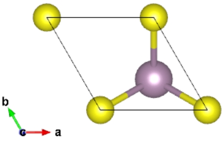
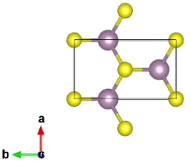
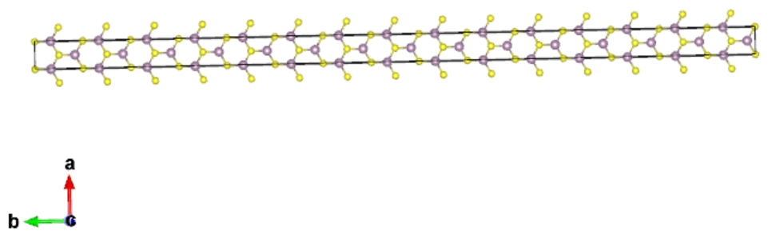
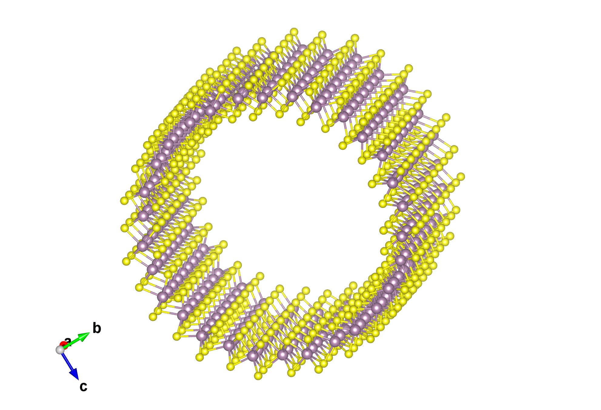

Tutorials
Running Ways
There are 2 ways to run qvasp under command line mode:
Just type
qvasp -pbe C Hin the terminal to generate POTCAR;echo -e "\n \n" | qvasp -bandd;
Run qvasp in Batch Mode
if one wants to run qvasp in batch mode, for example, to generate POTCAR file in several sub-olders with POSCAR:
for i in `ls -l |grep -a "^-"|awk '{print $NF}'`
do
cd $i
elements=`cat POSCAR|sed -n 6p`
qvasp -pbe $elements
echo $i "done"
cd ..
done
if one wants to extract the specified physical quantity, for example, to read band gap in several sub-olders:
for i in `ls -l |grep -a "^-"|awk '{print $NF}'`
do
cd $i
bandgap=`echo -e "\n \n" | qvasp -bandd | sed -n '7p' | awk '{print $7}'`
echo "Band gap of " $i “ is ” $bandgap
cd ..
done
Generate Input Files
To perform a firt principle calculation using VASP, usually one needs 4 files, INCAR,POSCAR, POTCAR and KPOINTS.
INCAR contains all keywords and tells VASP what to calculate;
POSCAR contains lattice parameters, atomic coordinates information,and atomic velocity information (for MD);
KPOINTS, contains K-points information in the reciprocal space, at which the wave function integrates to obtain the charge density.
POTCAR is a pseudo potential file, which is USPP or PAW type;
qvasp provide flexible toolkit to generate the input files for VASP.
Generate POSCAR
Usually, we recommand generate POSCAR firstly.
> qvasp -c2p C.cif
or
> qvasp -res2vasp C.res
If the POSCAR belongs to solid surface model, and need to fix the atomic potsions in botom layers. Further use:
> qvasp -fix POSCAR
Then the fix scale need to be inputted, one should note that the vacuum layer should along z direction.
>cat POSCAR
Transfer by qvasp
1.0
2.522100 0.000000 0.000000
1.261050 2.184203 0.000000
1.261050 0.728068 2.059286
C
2
Direct
0.000000 0.000000 0.000000
0.250000 0.250000 0.250000
Generate KPOINTS
The generation of KPOINTS requires the exist POSCAR, the k density and lattice constant determine the KPOINTS. For self-consistent calculation, users need to prepare a KPOINTS file to specify density of K-points and the method for automatic k-mesh generation.
> qvasp -k 0.03
Then, qvasp will ask us to input KPT-Resolved Value between K-points in reciprocal cell in units of \(2\pi \times 0.03 Å^{-1}\). And in this command, the dimension of material will be considered, the vacuum direction will be set to 1. Users should note that the dimension of material may be wrong, users could revise it manually. or ignore the dimension of material via using:
>qvasp -3k 0.03
Number of K-points increases when the density of k decreases. For each direction, the number is determined by
where \(\vec{b}_{i}\) are the reciprocal lattice vectors. These values are rounded to the next integer greater than or equal to N. The recommend value ~0.03 (\(2\pi \times 0.04 Å^{-1}\)) is enough for most system. This parameter is similar as the parameter KSPACING in INCAR. But the unit is different. Unit of KSPACING is \(Å^{-1}\), and the unit of qvasp is \(2\pi \times 0.03 Å^{-1}\).
The output KPOINTS file is:
>cat KPOINTS
Auto
0
G
16 16 16
0. 0. 0.
Generate POTCAR
The POTCAR should be generated by the element orders in POSCAR (6th line).
>qvasp -pbe C
The RECOMMENDED_POTCAR tag control whether to use recommended potentials from VASP manual (Page. 195, 2018.10.29, http://cms.mpi.univie.ac.at/vasp/vasp/Recommended_PAW_potentials_DFT_calculations_using_vasp_5_2.html).
POTCAR types:
No extensions “_”
_d. An extension d, treat the d semi core states as valence state._pvor_sv. The extensions_pvand_svimply that the p and s semi-core states are treated as valence states._hand_s. An extension_hor_simplies that the potential is harder or softer than the standard potential and hence requires a higher or lower energy cutoff.Pseudo hydrogen. ex:
H.5_GW. Used for GW calculation.
If users want to use _sv or _pv or H 1.25e pseudo potential， use command:
>qvasp -pbe Ca_sv H1.25
Then the POTCAR file is generated as:
>cat POTCAR
PAW_PBE Ca_sv 06Sep2000
10.0000000000000
parameters from PSCTR are:
SHA256 = a47365830e737f14e0e6c5cf1ed81b94e081eecf0a33df105380881bc9da05d5 Ca_sv/POTCAR
COPYR = (c) Copyright 06Sep2000 Georg Kresse
COPYR = This file is part of the software VASP. Any use, copying, and all other rights are regulated by the VASP license agreement.
COPYR = If you do not have a valid VASP license, you may not use, copy or distribute this file.
VRHFIN =Ca: 3s3p4s
LEXCH = PE
EATOM = 1006.0909 eV, 73.9456 Ry
TITEL = PAW_PBE Ca_sv 06Sep2000
LULTRA = F use ultrasoft PP ?
If users want to check the type of POTCAR, use command:
>qvasp -cp
TITEL = PAW_PBE Ca_sv 06Sep2000
TITEL = PAW_PBE H1.25 07Sep2000
The results show that the type of POTCAR is PAW_PBE, and the elements contain Ca_sv and H1.25.
Generate INCAR
qvasp can provide INCAR template for structural optimization, electronic structure calculations.
>qvasp -relax
The INCAR for structure optimization was generated sucessufully
>cat INCAR
SYSTEM = qvasp
INCAR-basic
PREC = Normal
ENCUT = 400 eV
NELMIN= 5
LREAL = F ## set to Auto if the valance electron number > 20
# ALGO = Fast
EDIFF = 1E-5
# ISMEAR = 0
SIGMA = 0.2
# LDAU=.TRUE. ## For LDA + U set
# LDAUTYPE=2
# LDAUL=-1 2 ## -1,0,1,2,3 for none,s,p,d,f
# LDAUU=0 3
# LDAUJ=0 0
ISPIN = 1 ## For magnetism set
# MAGMOM = 3*1 -4 16*0 # Antiferromagnetism needs to be set
# NCORE = 2
# KPAR = 2
NCORE = 2 ## Important to reduce calculate time, equal sqrt(cpu cores)
Ionic Relaxation
ICHARG = 2
EDIFFG = -0.03 #force
NSW = 300 #max steps for IOM
IBRION = 2
POTIM = 0.5
ISIF = 2 #not change lattice:2 chang lattice:3
# IOPTCELL= 1 0 0 0 1 0 0 0 0 # fix or relax lattice
PSTRESS= 0
LCHARG = .FALSE.
LWAVE = F
# Use 'qvasp -p2c' to transer format (VESTA or MS)
However, here qvasp only provide the template, users should revised them accordingly. In addition, “qvasp -relax” means to merge “$qvasppath/exefile/INCAR/INCAR-base” and “$qvasppath/exefile/INCAR/INCAR-relax”, users can customized the template.
Read energy (enthalpy)
qvasp is very powerful at pre- and post- process VASP band structure calculation. “qvasp -e” provide flexible way to read the energy (enthalpy) from OUTCAR or folder/OUTCAR
From OUTCAR
>ls
CHG CONTCAR EIGENVAL INCAR log OUTCAR POSCAR REPORT vasp60.o21678 WAVECAR CHGCAR DOSCAR IBZKPT KPOINTS OSZICAR PCDAT POTCAR vasp60.e21678 vasprun.xml XDATCAR
>qvasp -e
Energy in this folder is: -6.75192696 eV
Get COVERAGED: YES !
>cd ../150GPa (PSTRESS=1500 in INCAR)
>ls
CHG CONTCAR EIGENVAL INCAR log OUTCAR POSCAR REPORT vasp60.o21678 WAVECAR CHGCAR DOSCAR IBZKPT KPOINTS OSZICAR PCDAT POTCAR vasp60.e21678 vasprun.xml XDATCAR
>qvasp -e
Pressure: 150 GPa,Enthalpy: 8.13958935 eV, PV: 39.09295879
Get COVERAGED: YES !
From folder/OUTCAR
>ls
150GPa/OUTCAR 200GPa/OUTCAR 300GPa/OUTCAR Ca/OUTCAR H2/OUTCAR
>qvasp -e
------------------------------------------------------------------------------------------------------
Folder: 150GPa , Pressure: 150 GPa, Enthalpy: 8.13958935 eV, PV: 39.09295879 , coveraged: YES
------------------------------------------------------------------------------------------------------
Folder: 200GPa , Pressure: 200 GPa, Enthalpy: 20.62201168 eV, PV: 47.97087856 , coveraged: YES
------------------------------------------------------------------------------------------------------
Folder: 300GPa , Pressure: 300 GPa, Enthalpy: 43.05336994 eV, PV: 63.34441658 , coveraged: YES
------------------------------------------------------------------------------------------------------
Folder: Ca , Energy: -2.07213341 eV, coveraged: YES
------------------------------------------------------------------------------------------------------
Folder: H2 , Energy: -6.75192696 eV, coveraged: YES
------------------------------------------------------------------------------------------------------
>ls
R6G/OUTCAR TiN010/OUTCAR TiN010-R6G/OUTCAR
>qvasp -e
|---------------------------------------------------------------|
| foldername | energy | convergence |
|---------------------------------------------------------------|
| R6G | -403.42205949 | YES |
|---------------------------------------------------------------|
| TiN010 | -2709.70945598 | YES |
|---------------------------------------------------------------|
| TiN010-R6G | -3113.30729288 | YES |
|---------------------------------------------------------------|
the max energy point is:
folder: R6G energy: -403.42205949
the min energy point is:
folder: TiN010-R6G energy: -3113.30729288
File Format Transfer
qvasp provide effective tool for files format transfer, include: 1. cif files to POSCAR (support batch mode):
> qvasp -c2p C.cif Pt.cif Si.cif
or for Materials Studio doping system, run:
> qvasp -c2p2 C.cif Pt.cif Si.cif
POSCAR to cif files:
> qvasp -p2c CONTCAR
OUTCAR to trajectory file (.arc, can be opened by Materials Studio).
> qvasp -out2arc
OUTCAR to Gauss.log, which can be opened by Gaussian Views.
> qvasp -gauss
density file (.castep, from the calculated result of CASTEP) to CHGCAR (VASP,can be opened by VESTA)
> qvasp -den2vasp
res file (GROMACS) to POSCAR
> qvasp -res2vasp
Calculated models building
Fix atomic layer for POSCAR
Create supercell for POSCAR
Build the solid surface
Redefine lattice vectors
Construct orthogonalize cell
Correct the imaginary frequency
Find the primitive cell
Insert points for Transition states
prepared the reactant and production in .vasp format, and termed as “R” and “P”, then run:
> qvasp -it 4
Then the 00/POSCAR 01/POSCAR 02/POSCAR 03/POSCAR 04/POSCAR 05/POSCAR will be generated, the 00/POSCAR is the reactant and the 05/POSCAR is production, the 01/POSCAR 02/POSCAR 03/POSCAR 04/POSCAR are the inserted points.
If you insert the transition points using Materials Studio (Tools–>Reaction Preview), the “.arc” file will be generated. Then rename “.arc” with “POSCAR2” and the reactant wit “POSCAR1”, then upload them on the server, run:
> qvasp -it2
Then the 00/POSCAR 01/POSCAR 02/POSCAR 03/POSCAR 04/POSCAR … will be generated from ““*”.arc”
Bulid the nanotube
qvasp can roll any nanosheet, such as 2D materials or surface monolayer, to nanotube or nanoroll. 1. prepared the nanosheet in POSCAR format, but require that: (1) the lattice belongs to orthorhombic crystal system (the beta angle is 90 degree) (use “qvasp -orthcell” to swith) (2) vacuum along c direction and the long lattice direction along b direction. (use “qvasp -sc” to create supercell along b direction, use “qvasp -sw POS1” to switch (a,b,c) axis).
Here is the example for (MoS_2), the input is the POSCAR format.
> ls
MoS2
>mv MoS2 POSCAR
>qvasp -findcell
Analysis precision is 0.100
Read data from POSCAR file
Find cell.vasp from POSCAR, Good Luck!
> mv cell.vasp POSCAR
Open POSCAR with VESTA:
{kind=link}

Swith the lattice from hexagonal lattice to orthorhombic lattice:
>qvasp -orthcell
Please input the max value when redefine lattice(1~5):
2
Scaning transfer matrix from POSCAR,Please waiting...
Finishing 20% ...
Finishing 100% ...
Removing the repeat case ...
=======================================================================================================
ID Atomic-num. a b c Redefine matrix
=======================================================================================================
1 6 3.1500 5.4560 14.0000 1 1 0 -1 1 0 0 0 1
2 12 3.1500 5.4560 28.0000 1 1 0 -1 1 0 0 0 2
3 12 3.1500 10.9119 14.0000 1 1 0 -2 2 0 0 0 1
4 12 5.4560 6.3000 14.0000 1 -1 0 2 2 0 0 0 1
5 24 3.1500 10.9119 28.0000 1 1 0 -2 2 0 0 0 2
6 24 5.4560 6.3000 28.0000 1 -1 0 2 2 0 0 0 2
7 24 6.3000 10.9119 14.0000 2 2 0 -2 2 0 0 0 1
8 48 6.3000 10.9119 28.0000 2 2 0 -2 2 0 0 0 2
=======================================================================================================
Which ID do you want to use in above table(eg 1 2):1
Successfully transfer to rectangular lattice in POSCAR-1.vasp!
Open POSCAR-1.vasp with VESTA:
{kind=link}

Create the supercell along b direction:
> qvasp -sc
Read data from POSCAR file
Conctruct supercell from POSCAR, Good Luck!
Please input the supercell along a, b and c directions (eg. 3 3 1):1 15 1
Got it, Please check the supercell1151.vasp file
Open supercell1151.vasp with VESTA:
{kind=link}

Rolling supercell1151.vasp to nanotube:
> qvasp -nanotube supercell1151.vasp
You should know:
1.Roll along x direction;
2.Bending along Y direction to a cycle (360);
3.Vaccum layer direction along z direction for a 2D structue.
Input the rolling angle from 0 to 360:360
Transfer it to Nanotube successfully!Please check POSCAR-nanotube!
Cite with 'The calculations were assisted by the qvasp[1]'
[1] Wencai Yi, et al.qvasp: A Flexible Toolkit for VASP Users in Materials Simulations
Open POSCAR-nanotube with VESTA:
{kind=link}

Build the heterojunction
Build the Moire superlattice
Postprocessing Toolkits
Work function
Band structure
Correct band structure via scissor
Density of states
Correct density of state via scissor
Local density of states
Molecular dynamic toolkit
qvasp -mde Obtain Energy data for MD qvasp -mdm Obtain Magnetic moment for MD
Elastic constants
Zero point energy
Opticcal property
3D energy band for 2D materials
Customizable Tools
qvasp -vaspkit Call VASPKIT,ref:Comput. Phys. Commun., 2021, 267: 108033 qvasp -atomkit Call atomkit, ref:https://vaspkit.com/atomkit.html qvasp -baderd Obtain Bader charge information qvasp -post_VASP Call post_VASP toolkit qvasp -den2vasp Trasfer density file (CASTEP) to CHGCAR (VASP) qvasp -res2vasp Transfer res fomat to POSCAR(Chaoyu He)
Clean calculated folder
qvasp -clean